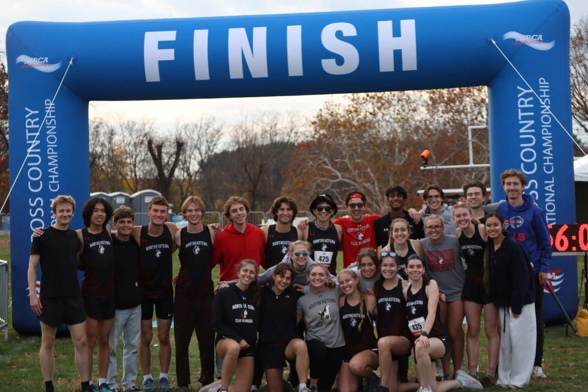
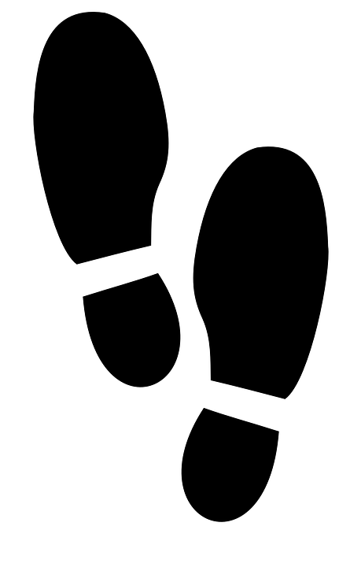
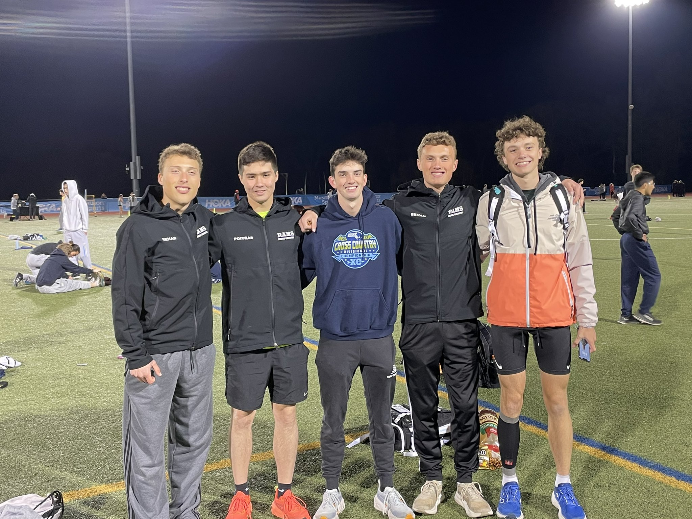
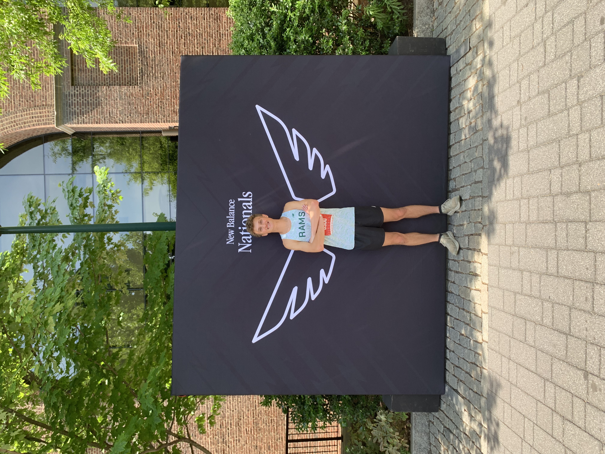

And since then, I have never looked back.

What Running Means to Me
Ever since I started 5 years ago, I can't imagine my life without running. It gives me an outlet to push myself beyond what I thought was possible, and the space to free my mind from the clutter of everyday life and focus on one thing: getting faster. The thing I love most about running is that the power to improve is all within your hands. How fast you improve is all about your consistency and willingness to commit 100% every day. Running builds discipline, and that discipline gives you such an accomplished feeling when you complete a race or achieve a time you worked so hard for.
My Timeline
2018
In 8th grade I decided to give track and field a try. My first impression was not great. I showed up in pants and a sweater, struggled through the run, and walked away convinced it wasn't for me.
2022
My first real year of running, following my brother Kyle onto our high school track and field team as an intermediate mid-distance runner. At the time I had no real motivation or dedication, but I kept showing up and that was enough to get started.
2023
Trained over the summer in preparation for the winter track season, skipping cross country in the fall as I was solely focused on the 400m and 800m at the time. This year was more about building relationships than times. I began connecting with upperclassmen and younger runners who became lifelong friends. Running together showed me how genuine the connections you build through the sport really are.
2024
My senior year was the biggest of my running career. I intensely trained through the summer and competed in all three seasons — cross country, indoor, and outdoor track. Set huge PRs in the 800m, 600m, 1000m, and 5k. Ran on a 4x800 team that broke 8 minutes and qualified for New Balance Nationals, and won the MA D2 State 4x800m championship with a strong showing in the indoor 4x400m relay. This year proved that hard work and consistency yield real results.
2025
My first year of college running with Northeastern University Club Running. Training alongside experienced upperclassmen who pushed me to improve and became great friends along the way. The club helped ease my transition into college life and I came away with a new 800m PR. Dealt with slight Achilles tendinitis but was only out for 4 weeks.
2026
Had the best cross country build of my career, executing high mileage alongside workouts and long runs. Got elected to the Northeastern Club Running E-Board and represented the team at NIRCA XC Nationals. Also ran two half marathons for the first time, setting PRs in both the 8k and the half marathon. Unfortunately, early in the year I suffered a stress reaction near my posterior tibialis and was sidelined for 5 months.
Key Stats
800m
2:00Ran this PR as a relay leg at the 2025 NIRCA Spring Nationals, anchoring a 4x800 team that ran 8:00 flat, setting the club record and finishing 7th overall. Click here to view the full list of club records.
Half-Marathon
1:17:12Ran this PR in my first attempt at a half-marathon. It came during the championship season of XC, using the foundation I built to push me in a distance I had never attempted before. Ran under my friend Casey Morgan's bib so the result is technically under his name. More information can be found here
8k
28:29Ran this PR at the Cod Fish Bowl 2025. Had been training all summer intensely and was able to shave off 1 minute from my 8k PR the previous semester. More information can be found here
Northeastern Club Running
(NUCR)

People
The people at NUCR have become a core part of my dedication to running. From the moment I arrived at Northeastern, I was welcomed with open arms by every member of the club. The connections you make are genuine and long lasting. Watching teammates push themselves beyond what they thought was possible gives me the motivation to keep pushing myself too. I originally came for the running, but the reason I stay, even when injured and unable to run, is the people. They hold the club together and make it a great experience for runners of all levels. At the end of the day, that's what it's all about.
Perseverance
My time with NUCR has taught me that perseverance will take you far in any endeavor you dedicate yourself to. Throughout my training I've dealt with injuries, illness, academic pressure, and countless other obstacles that disrupt an ideal training plan. But being able to push through those setbacks and come out stronger and smarter on the other side is what moves your running career forward. Learning from those hardships lets you apply those lessons when you're healthy and helps prevent the same issues from coming up again. It's a skill I've developed both from my own experiences and from watching the people around me in the club do the same.
Progression
As a runner, NUCR has been instrumental in my growth. Every week the club sends out a schedule outlining workouts, runs, and upcoming races. Having that structure has helped me plan how to prepare my body for the week ahead and manage my training load effectively. That consistency and early notice have kept me healthy and allowed me to make real progress in both my endurance and speed.